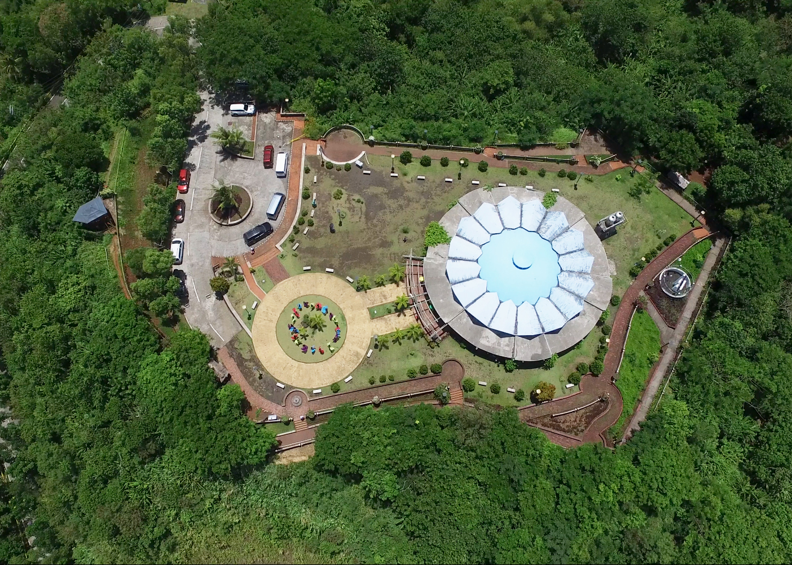
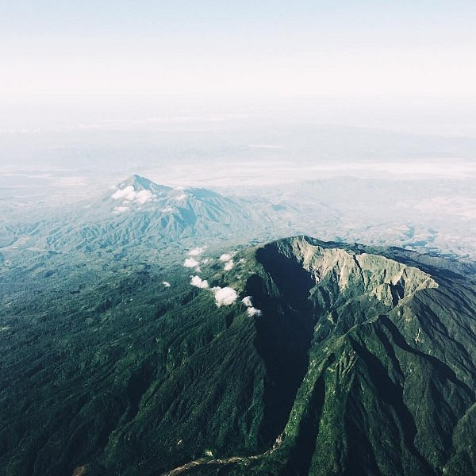
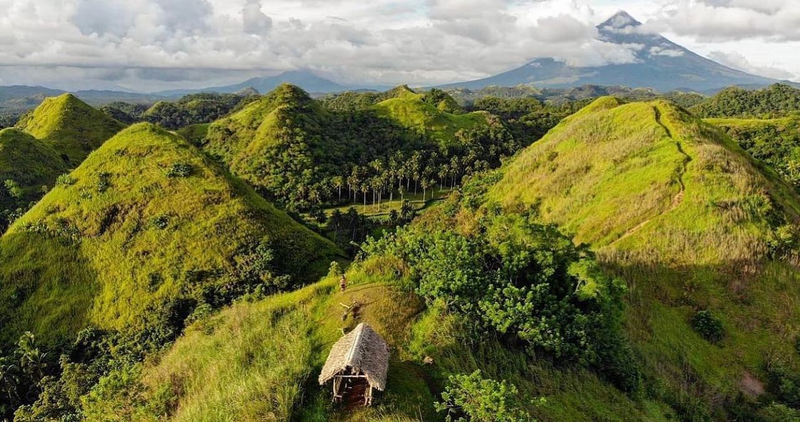

Discover the breathtaking mountains, scenic landscapes, and adventure-filled destinations that make Albay perfect for nature lovers.
Mountain tourism in Albay offers amazing views, cool fresh air, and exciting outdoor experiences. From hiking trails to scenic viewpoints, visitors can enjoy nature, take photos, and experience the beauty of Albay’s famous landscapes.

Known for its perfect cone shape, Mayon Volcano is the most iconic mountain in Albay and offers breathtaking views and adventure activities.

A popular viewpoint where visitors can enjoy a full view of Mayon Volcano and the city of Legazpi. Perfect for hiking and sightseeing.

A quiet and less crowded mountain ideal for nature lovers who enjoy peaceful surroundings and hiking adventures.

Often compared to Bohol’s Chocolate Hills, Quitinday Hills offers a unique landscape and scenic hiking experience.
Visitors can enjoy hiking, sightseeing, taking photos, and exploring nature trails. You can experience breathtaking views, cool mountain air, and peaceful surroundings. Some areas also offer ATV rides, viewpoints, and adventure activities. You can also try camping with friends, watch the sunrise or sunset from the mountains, and enjoy the natural beauty of Albay. For those who love adventure, guided hikes and outdoor activities are also available in some locations. It is also a great place to relax, unwind, and escape from the busy city life.
Wear comfortable clothes and proper footwear for hiking. Bring water and snacks, and always check the weather before visiting. Follow safety guidelines and respect nature by keeping the area clean. It is also important to start your trip early to avoid the heat and have more time to explore. Bring a camera or phone to capture the beautiful views. If you are not familiar with the place, consider going with a guide or group for safety. Always be careful on trails and stay on marked paths to avoid accidents.